OS & 시스템 관리
백업 솔루션 운영 — NetVault · NetBackup
시스템 파일 백업을 이전에는 Veritas NetBackup으로, 현재는 Quest NetVault로 운영하고 있습니다. 백업 서버(마스터) 기본 구성은 판매처 엔지니어가 했고, 저는 새 서버를 백업 대상으로 붙이는 클라이언트 설치·연동과 백업 작업 등록, 요청이 오면 파일을 복원하는 일을 맡았습니다. 두 제품 모두 WebUI와 CLI 방법을 함께 정리했습니다.
서버명·IP·경로·작업 이름은 예시이며 화면도 예시입니다. 메뉴 이름은 사용하는 버전과 언어 설정에 따라 조금 다를 수 있습니다.
1. 구성
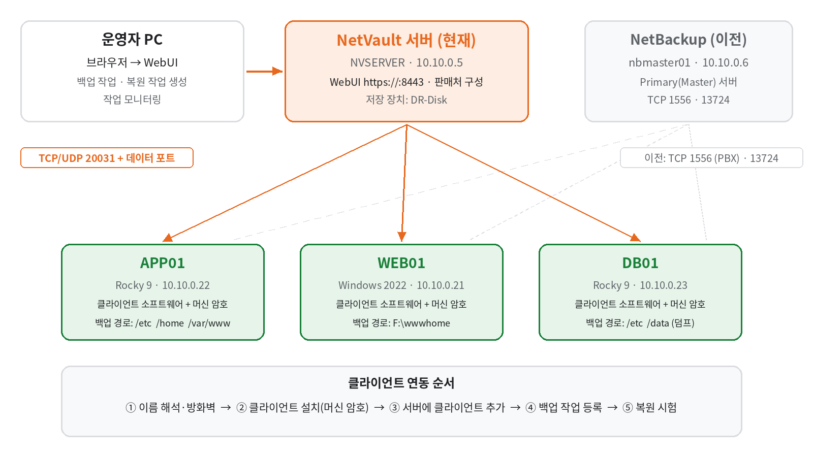
| NetVault (현재) | NetBackup (이전) | |
|---|---|---|
| 백업 서버 | NVSERVER 10.10.0.5 | nbmaster01 10.10.0.6 (Primary/Master) |
| 관리 화면 | WebUI https://서버:8443 | Web UI / 관리 콘솔, 복원은 Backup, Archive, and Restore |
| 클라이언트 인증 | 설치할 때 정한 머신 암호로 서버에 추가 | 인증서(CA 지문 확인, 필요 시 토큰) + bp.conf의 SERVER |
| 통신 포트 | TCP/UDP 20031 + 데이터 전송용 포트 범위 | TCP 1556 (PBX), 13724 (vnetd) |
| 백업 단위 | 백업 작업 = 선택 항목 + 플러그인 옵션 + 일정 + 대상 저장소 | 정책(Policy) = 클라이언트 + 백업 경로 + 일정 |
| CLI 위치 | <설치 경로>\util, bin | /usr/openv/netbackup/bin, bin/admincmd |
2. 공통 사전 작업
- 이름 해석: 백업 서버와 클라이언트가 서로의 이름을 찾을 수 있어야 합니다. DNS가 없으면 양쪽
/etc/hosts(Windows는C:\Windows\System32\drivers\etc\hosts)에 등록합니다. NetBackup은 특히 정방향·역방향 이름이 맞지 않으면 연결을 거부합니다. - 방화벽: 클라이언트에서 백업 서버 IP로부터 오는 통신만 허용합니다.
- 백업 대상 정리: 무엇을 백업할지(설정·데이터·웹 소스), 무엇을 뺄지(
/proc,/sys,/tmp, 캐시) 미리 정합니다. DB는 파일을 직접 백업하지 않고 덤프 파일을 만들어 그 폴더를 백업합니다. - 시간 동기화: 서버·클라이언트 시간이 틀리면 일정과 인증서 검증이 어긋납니다 (사내 NTP 사용).
3. NetVault — 클라이언트 설치
Linux
# 판매처에서 받은 클라이언트 설치 파일 (서버 버전과 맞춤)
chmod +x netvault-R2026xxxx-v13.x-Client-LinuxX86Linux64.run
# 무인 설치: 머신 이름과 머신 암호 지정 (암호에는 \ 와 공백 사용 불가)
./netvault-R2026xxxx-v13.x-Client-LinuxX86Linux64.run --mode unattended \
--logical-name APP01 --password '********'
# 화면을 보며 설치하려면: --mode text
# 서비스·포트 확인 (기본 설치 경로 /usr/netvault)
ps -ef | grep -E 'nvpmgr|nvnmgr' | grep -v grep
ss -lntup | grep 20031
# 방화벽: 백업 서버에서 오는 통신만 (데이터 포트 범위는 서버의 방화벽 설정 값과 맞춤)
firewall-cmd --permanent --add-rich-rule='rule family=ipv4 source address=10.10.0.5 port port=20031 protocol=tcp accept'
firewall-cmd --permanent --add-rich-rule='rule family=ipv4 source address=10.10.0.5 port port=20031 protocol=udp accept'
firewall-cmd --permanent --add-rich-rule='rule family=ipv4 source address=10.10.0.5 port port=20032-20100 protocol=tcp accept'
firewall-cmd --reload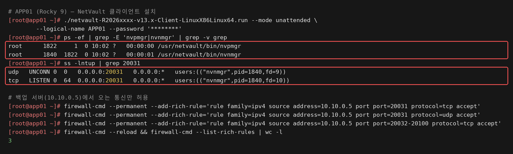
Windows
# 설치 파일 실행 → 설치 종류: Client → 머신 이름(WEB01) → 머신 암호 → 설치
# 무인 설치
<NetVault 클라이언트 설치 파일>.exe --mode unattended --logical-name WEB01 --password ********
# 방화벽 (관리자 PowerShell)
New-NetFirewallRule -DisplayName 'NetVault TCP' -Direction Inbound -Protocol TCP -LocalPort 20031,20032-20100 -RemoteAddress 10.10.0.5 -Action Allow
New-NetFirewallRule -DisplayName 'NetVault UDP' -Direction Inbound -Protocol UDP -LocalPort 20031 -RemoteAddress 10.10.0.5 -Action Allow4. NetVault — 서버에 클라이언트 추가 (연동)
WebUI
- 구성 → 클라이언트 관리 → 클라이언트 추가
- 같은 네트워크에서 응답하는 클라이언트 목록에서 선택. 다른 대역이라 목록에 없으면 머신 찾기에 IP 입력
- NetVault 암호(클라이언트 설치 때 정한 머신 암호) 입력, 클라이언트 그룹 지정
- 추가 후 클라이언트 관리 화면에서 상태가 온라인인지, 필요하면 방화벽 테스트로 TCP·UDP 통신 확인
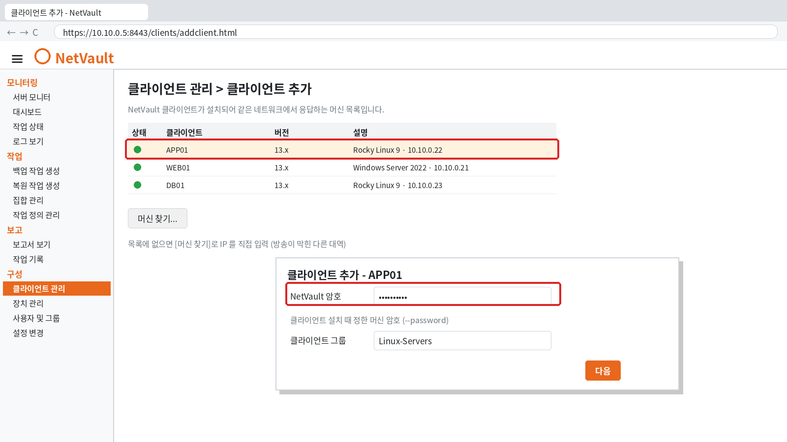
CLI (백업 서버에서)
# 클라이언트 추가 (방송이 닿지 않는 대역이면 -clientip 지정)
nvclientadd -client APP01 -password ******** -clientip 10.10.0.22
# 추가된 클라이언트 확인 / 응답 없는 클라이언트 찾기
nvclientlist
nvclientlist -find 10.10.0.22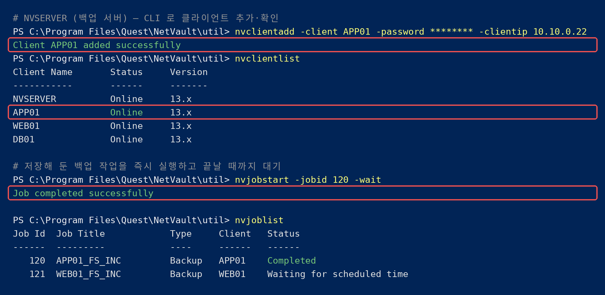
5. NetVault — 백업 작업 등록
작업 → 백업 작업 생성에서 다섯 가지를 고르면 하나의 백업 작업이 됩니다. 각 항목은 집합(Set)으로 저장되어 다른 작업에서도 재사용할 수 있습니다.
| 항목 | 설정 예 | 설명 |
|---|---|---|
| 선택 항목 | APP01 → File System → /etc, /home, /var/www | 백업할 경로. 가상 파일시스템(/proc, /sys)과 임시·캐시 폴더 제외 |
| 플러그인 옵션 | 전체 / 증분 | 주 1회 전체 + 매일 증분 (작업 두 개로 등록) |
| 일정 | 매일 01:00 | 업무 부하가 적은 시간, 서버끼리 겹치지 않게 나눔 |
| 대상 저장소 | DR-Disk | 판매처가 구성한 저장 장치 |
| 고급 옵션 | 보존 30일, 백업 후 검증 | 보존 기간이 지나면 자동 만료 |
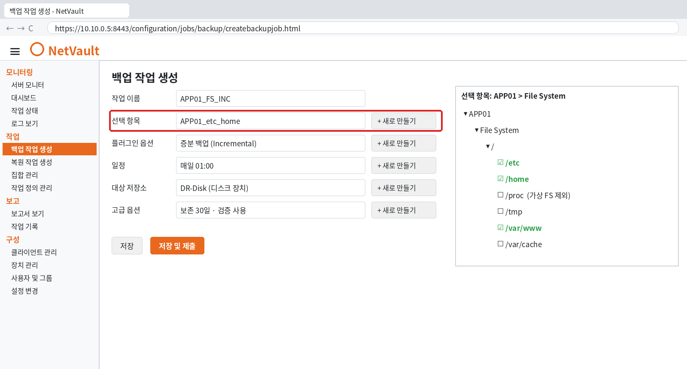
# CLI: 선택 항목 집합 만들기 (WebUI 에 보이는 플러그인 이름 그대로)
nvsetcreate -type BS -setname APP01_etc_home -client APP01 -plugin "File System" \
-include "/etc" -include "/home" -include "/var/www"
# 등록된 작업 즉시 실행 후 결과 확인
nvjobstart -jobid 120 -wait # Job completed successfully / Job Failed
nvjoblist처음 등록한 작업은 일정을 기다리지 말고 즉시 한 번 실행해, 백업이 끝까지 되는지와 소요 시간·용량을 확인합니다.
6. NetVault — 파일 복원
실제로 썼던 절차입니다. 원래 위치에 덮어쓰지 않고, 다른 이름·다른 경로로 먼저 복원해 요청자가 확인한 뒤 옮깁니다.
① 저장 집합 선택 (복원할 장비·날짜)
작업 → 복원 작업 생성 → 검색창에 클라이언트명을 넣고, 복원할 날짜의 저장 집합(Saveset)을 고릅니다. 오른쪽 정보에서 작업·클라이언트·날짜·종류(전체/증분)를 확인합니다.
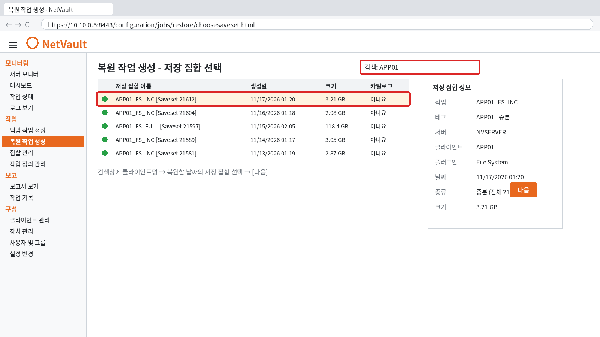
② 선택 집합 만들기 (복원할 파일 선택, 이름·경로 변경)
트리에서 복원할 폴더·파일을 체크하고, 항목을 선택한 뒤 이름 바꾸기 / 위치 변경에서 새 이름과 복원 경로를 지정합니다.
| 운영체제 | 위치 변경 예 |
|---|---|
| Windows | F:\wwwhome\ |
| Linux | /root/test |
F:\file\restore.txt처럼 드라이브 문자와 역슬래시, Linux는 /file/restore.txt처럼 슬래시로 시작해야 합니다. 형식이 틀리면 복원이 실패하거나 의도하지 않은 위치에 파일이 만들어집니다. WebUI를 Windows PC에서 열어도, 백업 서버가 Windows여도 기준은 대상 클라이언트입니다.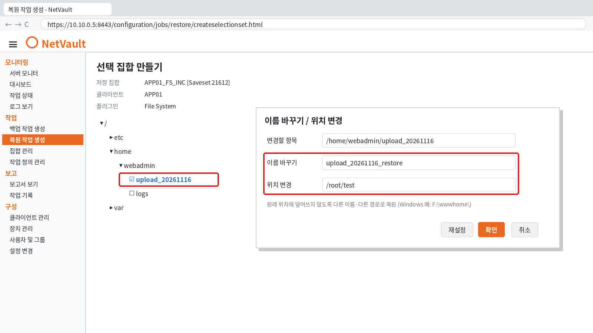
③ 복원 작업 생성 (작업 이름 작성)
| 항목 | 값 | 설명 |
|---|---|---|
| 작업 이름 | APP01_restore_test_01 | 요청 건을 알 수 있게 (나중에 작업 기록에서 검색) |
| 선택 항목 | ②에서 만든 선택 집합 | |
| 대상 클라이언트 | APP01 | 다른 클라이언트를 고르면 다른 서버로 복원 (원본 서버 장애 시) |
| 일정 | Immediate | 즉시 실행 |
| 원본 옵션 | Any Device | 백업이 있는 어떤 장치에서든 읽음 |
| 고급 옵션 | Restore from selected backup | 고른 저장 집합에서 복원 |
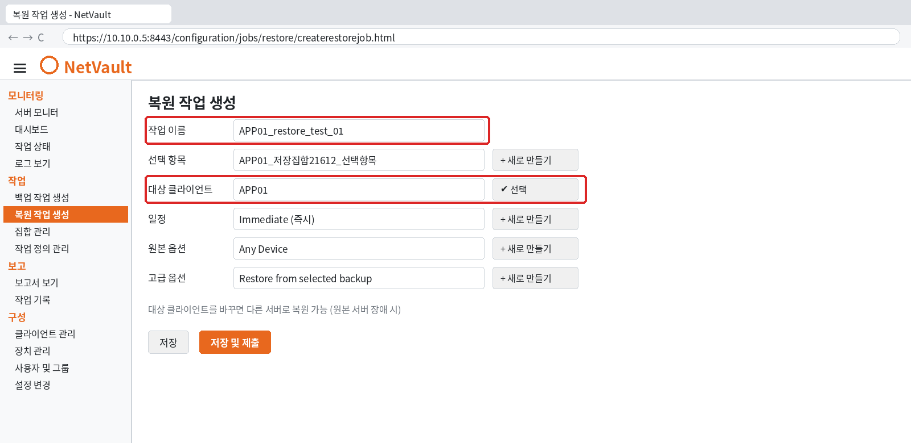
④ 작업 상태 및 상세 내역 확인
모니터링 → 작업 상태에서 복원 작업을 찾아 작업 모니터링을 열면 전송량·속도와 단계별 로그가 보입니다. 완료 후 클라이언트에서 파일 개수·크기·권한을 확인합니다.
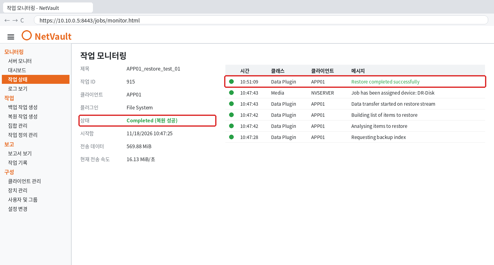
# 클라이언트에서 결과 확인
ls -l /root/test/upload_20261116_restore | head
du -sh /root/test/upload_20261116_restore
# 확인 후 요청자에게 전달하거나 원래 위치로 이동 (권한·소유자 유지)
rsync -a /root/test/upload_20261116_restore/ /home/webadmin/upload_20261116/- 증분 저장 집합에는 그날 바뀐 파일만 들어 있습니다. 특정 날짜의 폴더 전체 상태가 필요하면 그 이전 전체 백업부터 필요한 증분까지 차례로 복원해야 하는지 저장 집합 정보를 보고 판단합니다.
- 원래 위치 덮어쓰기는 마지막 수단입니다. 덮어쓰기 전에 현재 파일을 따로 복사해 둡니다.
7. NetBackup (이전 운영) — 클라이언트 설치·연동
클라이언트 설치 (Linux)
# 1) 이름 해석 — 양쪽 모두
echo '10.10.0.6 nbmaster01.corp.local nbmaster01' >> /etc/hosts # 클라이언트
# (마스터의 /etc/hosts 에도 10.10.0.22 app01 등록)
# 2) 설치 (대화형): 마스터 이름, 클라이언트 이름, CA 인증서 지문 확인
cd NetBackup_10.x_LinuxR_x86_64 && ./install
# 3) 설정 확인
cat /usr/openv/netbackup/bp.conf
# SERVER = nbmaster01 ← 이 클라이언트에 접근을 허용할 서버 (맨 위가 마스터)
# CLIENT_NAME = app01
# 4) 인증서 (설치 때 실패했거나 재발급할 때)
/usr/openv/netbackup/bin/nbcertcmd -getCACertificate
/usr/openv/netbackup/bin/nbcertcmd -getCertificate # 보안 수준에 따라 -token 필요
# 5) 마스터가 나를 어떤 이름으로 보는지
/usr/openv/netbackup/bin/bpclntcmd -pn
# 방화벽: 마스터·미디어 서버에서 1556, 13724
firewall-cmd --permanent --add-rich-rule='rule family=ipv4 source address=10.10.0.6 port port=1556 protocol=tcp accept'
firewall-cmd --permanent --add-rich-rule='rule family=ipv4 source address=10.10.0.6 port port=13724 protocol=tcp accept'
firewall-cmd --reload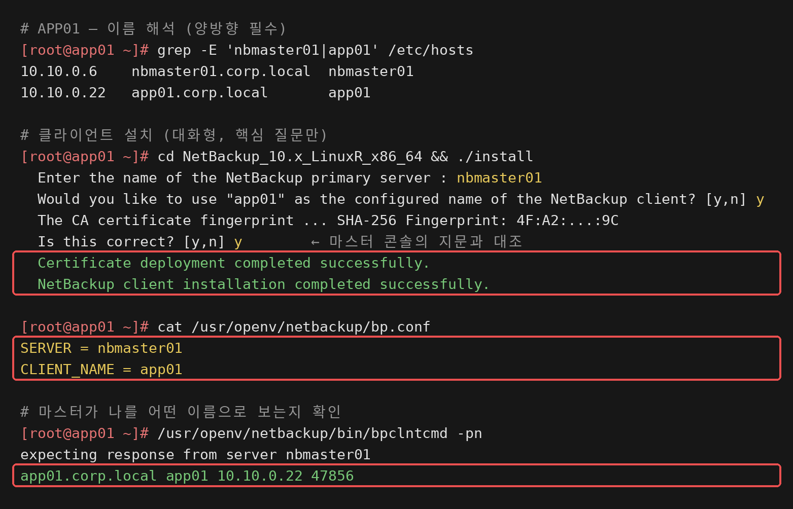
마스터에서 정책에 클라이언트 추가
cd /usr/openv/netbackup/bin/admincmd
./bpplclients FS_Linux_Daily -add app01 Linux RedHat # 정책에 클라이언트 추가
./bpplclients FS_Linux_Daily -l # 정책의 클라이언트 목록
./bptestbpcd -client app01 -verbose # 마스터 → 클라이언트 통신 시험 (1 1 1 이면 정상)
./bpbackup -i -p FS_Linux_Daily -s Full -h app01 # 첫 수동 전체 백업
./bpdbjobs -report | head # 작업 상태 (Status 0 = 성공)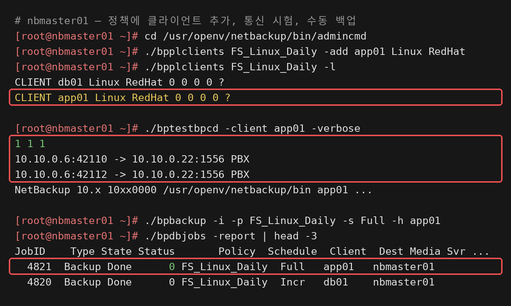
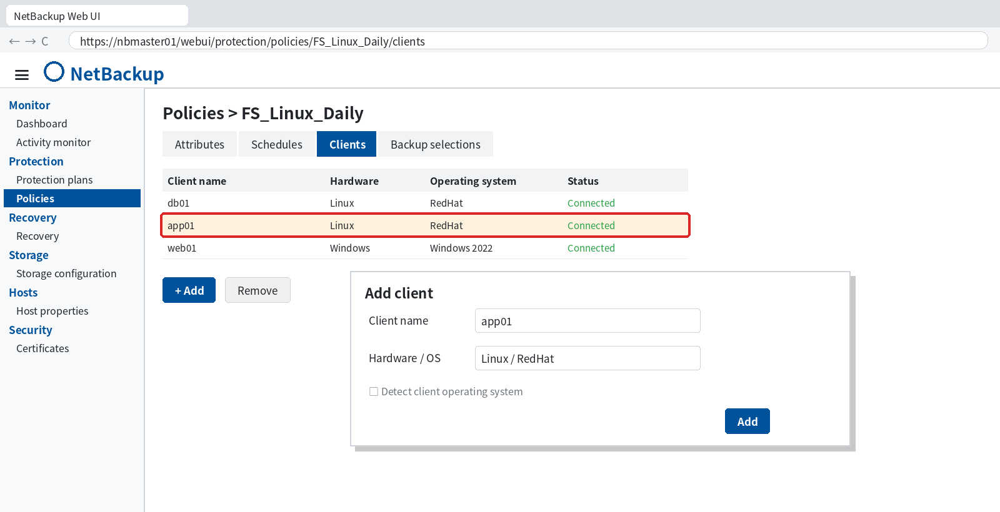
8. NetBackup — 파일 복원
GUI: Backup, Archive, and Restore
- 원본 클라이언트(Source), 복원 받을 클라이언트(Destination), 정책 종류(Standard), 날짜 범위 지정
- Restore Files 트리에서 복원할 폴더·파일 체크
- Restore everything to a different location → 복원 경로
/root/test/, 덮어쓰기 해제 - Start Restore → 진행 상황(Task Progress)에서 완료 확인
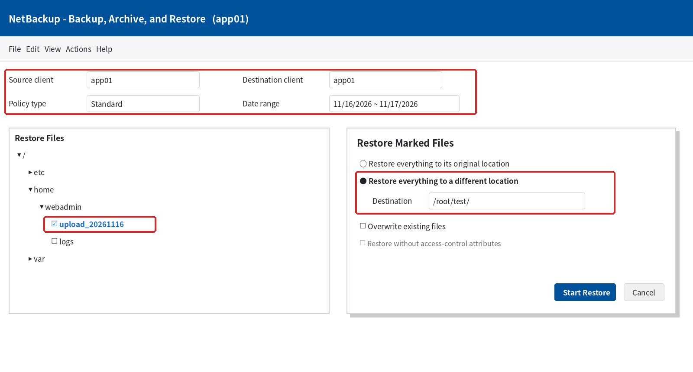
CLI: bplist + bprestore
# 백업된 파일 목록 (-t 0 = Standard 정책, 날짜는 MM/DD/YYYY)
bplist -C app01 -t 0 -s 11/16/2026 -e 11/17/2026 -R 1 /home/webadmin/
# 다른 경로로 복원: 이름 변경 파일 (형식: change 원래경로 to 새경로)
echo 'change /home/webadmin/upload_20261116 to /root/test/upload_20261116' > /tmp/rename.txt
bprestore -C app01 -D app01 -t 0 -s 11/16/2026 -e 11/17/2026 \
-R /tmp/rename.txt -L /tmp/restore.log -w /home/webadmin/upload_20261116
tail /tmp/restore.log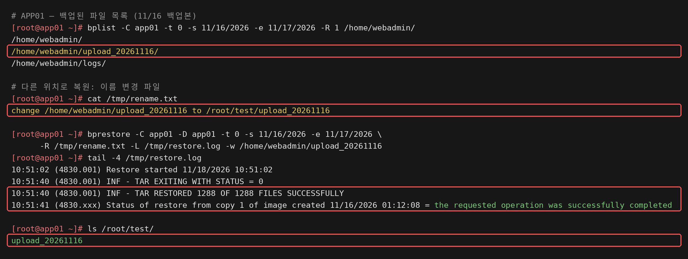
-D에 다른 클라이언트)하려면 마스터에서 허용이 필요합니다. 마스터의 /usr/openv/netbackup/db/altnames/<요청하는 클라이언트> 파일에 복원 받을 수 있는 클라이언트 이름을 넣거나, 마스터 콘솔에서 직접 복원을 실행합니다.9. 운영 원칙 (권장)
- 복원 시험을 정기적으로: 백업 성공 표시만 믿지 말고, 주기적으로 서버별 임의 파일을 다른 경로에 복원해 열어 봅니다. 복원이 되는 백업만 백업입니다.
- 새 서버 = 백업 등록까지 끝나야 구축 완료: 서버 구축 체크리스트에 클라이언트 설치·작업 등록·첫 백업 성공 확인을 넣습니다.
- 실패 알림: 백업 실패·경고를 메일 등으로 받고, 매일 작업 상태를 확인합니다.
- 복원 요청 기록: 요청자, 대상 경로, 날짜, 복원 위치, 결과를 남겨 같은 요청이 올 때 시간을 줄입니다.
10. 트러블슈팅
| 제품 | 증상 | 원인 및 해결 |
|---|---|---|
| NetVault | 복원이 실패하거나 엉뚱한 곳에 파일이 생김 | 위치 변경 경로를 대상 클라이언트 OS 형식과 다르게 입력함. Windows 클라이언트는 드라이브 문자와 역슬래시(F:\file\restore.txt), Linux 클라이언트는 슬래시로 시작하는 경로(/file/restore.txt)로 써야 함. 백업 서버가 Windows여도 경로는 복원 받을 클라이언트 기준 |
| 클라이언트 추가 목록에 안 보임 | 다른 대역이라 방송이 안 닿음 → 머신 찾기 / -clientip로 IP 지정. 20031 TCP·UDP 방화벽 확인 | |
| 추가할 때 암호 오류 | 설치 때 정한 머신 암호와 다름. 클라이언트에서 설정 도구(Txtconfig)로 암호 재설정 | |
| 추가는 됐는데 백업이 멈춤 | 데이터 전송용 포트 범위가 방화벽에 없음 → 서버의 방화벽 설정 값과 같은 범위 허용, WebUI 방화벽 테스트 | |
| 클라이언트 오프라인 | NetVault 서비스 중지(재부팅 후 미기동 등) → 서비스 시작, nvpmgr·nvnmgr 프로세스 확인 | |
| NetBackup | Status 59 (access to the client was not allowed) | 클라이언트 bp.conf의 SERVER 목록에 마스터·미디어 서버 이름이 없음 |
| Status 58 / 25 (연결 실패) | 1556·13724 방화벽, 클라이언트 서비스 중지 | |
| Status 48 (client hostname could not be found) | 마스터에서 클라이언트 이름 해석 실패 → hosts·DNS | |
| Status 71 (none of the files in the file list exist) | 정책의 백업 경로 오타 또는 해당 경로가 없음 | |
| Status 1 (partial success) | 일부 파일을 읽지 못함(사용 중·권한) → 작업 상세에서 파일 확인, 제외 목록 조정 |